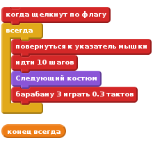
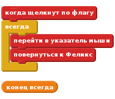
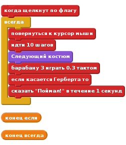
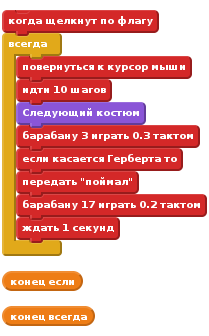
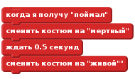
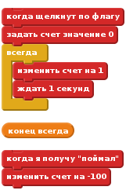

Уровень 1
Введение:
Мы собираемся сделать игру, с котом Феликсом и мышкой Гербертом. Вы управляете Гербертом с помощью мышки и стараетесь не попасться Феликсу. Чем дольше вы его избегаете, тем больше очков вы набираете, но не попадайтесь, потому что ваш счет будет идти вниз! Это простой проект по основам Скретча (Scratch, http://scratch.mit.edu/)
Шаг 1: Феликс следует за указателем мыши
- Создайте новый проект
- Нажмите на сцене рядом с спрайтом и переключитесь на вкладку Фон, а затем импортируйте фон в помещении / зал (hall). Удалите начальный пустой фон.
- Измените имя спрайта на “Феликс”.
- Убедитесь, что Феликс лишь смотрит влево-вправо, нажав кнопку со стрелочками
- Создайте следующий скрипт:

Проверьте ваш проект
Нажмите зеленый флаг.
Следует ли Феликс за указателем мыши? Выглядит ли это, как будто он шагает, когда движется? Двигается ли он с правильной скоростью?
Сохраните ваш проект
Шаг 2: Феликс преследует Герберта
Теперь, мы хотим, чтобы Феликс преследовал мышку Герберта, а не указатель мыши.
- Создайте новый объект, “выбрать спрайт из библиотеки” и выбрав “Животные - > Mouse”.
- Измените имя спрайта на “Герберт”
- Отредактируйте костюм и сделайте его меньше, чем Феликс. Для этого найдите кнопку “уменьшить” на верхней панели и нажмите на костюм 5-6 раз.
- Убедитесь, что Герберт смотрит только налево или направо.
- Создайте Герберту следующий скрипт:

Проверьте ваш проект
Нажмите зеленый флаг.
Движется ли Герберт с указателем мыши? Преследует ли Феликс Герберта?
Сохраните ваш проект.
Шаг 3: Феликс сообщает, когда он ловит Герберта
Мы хотим, чтобы Феликс знал, когда он ловит Герберта, и сообщал нам об этом
- Измените скрипт Феликс на следующий:

Проверьте ваш проект
Нажмите зеленый флаг.
Говорит ли Феликс, когда он ловит Герберта
Сохраните ваш проект
Шаг 4: Герберт превращается в приведение, когда его ловят.
Вместо того, чтобы Феликс говорил что-то, мы хотим, чтобы Герберт превращался в призрак, когда его ловят.
- Измените скрипт Феликса, чтобы он посылал сообщение, когда он ловит Герберта.

- Импортировать для Герберта новый костюм, из библиотеки “Фантастика -> Ghost”.
- Отредактируйте костюм, чтобы сделать его меньше. Нажмите на кнопку “уменьшить”, а потом 5-6 раз на костюм
- Измените имена костюмов Герберта, так, чтобы костюм мыши назывался “живой”, а костюм призрака - “мертвый”.
- Создайте новый скрипт для Герберта, чтобы превращать его в мертвого:

Проверьте ваш проект
Нажмите зеленый флаг.
Превращается ли Герберт в призрака, когда его ловят?
Играет ли Феликс нужные звуки в нужное время?
Стоит ли Феликс достаточно далеко, чтобы Герберт мог убежать?
Сохраните ваш проект.
Шаг 5: Ведем счет игры
Давайте добавим счет, чтобы знать, насколько хорошо мы оберегаем Герберта
Мы начнем со счета ноль и будем увеличивать его на 1 каждую секунду. Если Феликс поймает Герберта, мы будем уменьшать счет на сто.
- Сделайте переменную, для всех спрайтов, назовите её “счет”.
- Для уровня создайте два скрипта:

Проверьте ваш проект
Нажмите зеленый флаг.
Увеличивается ли счет на 1 каждую секунду
Уменьшается ли счет на 100, когда Герберт пойман
Что происходит, когда Герберт пойман прежде чем счет достигнет 100? Возвращается ли счет обратно к нулю, когда вы начинаете новую игру?
Сохраните ваш проект.
Отличная работа, вы закончили, теперь можно насладиться игрой!
Не забудьте, вы можете разделить вашу игру со всеми друзьями и семьей, зарегистрировавшись на сайте и кликнув на кнопку “Поделиться” в правом верхнем углу